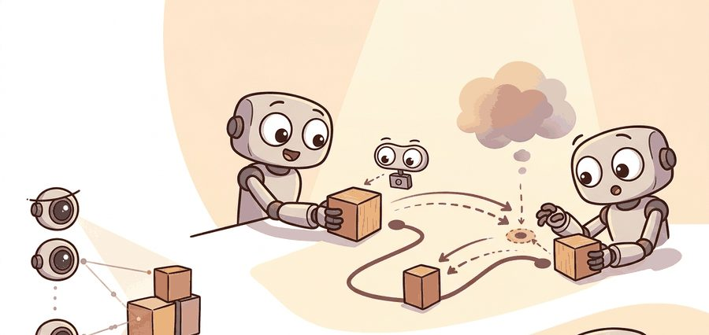
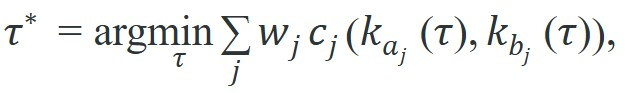

"Name the points, state the relation, let the optimizer do the geometry. The goal is not where things are; it is how they must be arranged relative to each other."
A Keypoint Constraint Enthusiast

This section assumes familiarity with keypoint detection and visual correspondence from section 27.5. The geometric-constraint interface introduced here is extended in section 33.6, which covers tool-use APIs and plan verification that wrap around the optimization loop. The bimanual manipulation experiments that benchmark relational-keypoint planning appear in section 42.3.
Tell a robot to "pour the bottle into the cup" and a single sentence has to become a millimeter-precise wrist pose. ReKep never lets language touch the geometry at all. It marks two points and one relation, then hands the arithmetic to an optimizer. ReKep (relational keypoint constraints) is a method, introduced by Huang et al. (2024), in which a language or vision-language model names a few task-relevant points on objects and states geometric relations among them, and a numeric optimizer then finds a robot pose that satisfies those relations. As Figure 33.5A shows, the LLM specifies constraints between pairs of keypoints, a 6-DOF optimization satisfies the constraint set, and a low-level controller tracks the resulting pose. Read that figure as a relational-constraint contract. ReKep-style keypoints help when relations such as near, above, aligned, and graspable are grounded to tracked 3D points that survive motion and occlusion.
Depth and self-containment. Readers should understand why keypoint relations can express tasks more compactly than dense maps or free-text constraints, and what assumptions that representation makes about perception quality.
Production and evaluation contract. The artifact should include the keypoints, the relational constraints, the cost value, and the executed trajectory so one can see whether failure came from perception or optimization.
For ReKep: relational keypoint constraints, name the language interface, grounded world state, executable action contract, and evidence artifact before trusting any claimed improvement.
For ReKep: relational keypoint constraints, write one evidence row recording instruction, world-state estimate, chosen action, verifier result, and failure label. Then identify which field would change first under command misunderstanding.
A robot arm hovers over a cluttered table. The instruction is "pour the bottle into the cup." Instead of generating a dense trajectory or a symbolic plan with a dozen steps, ReKep asks an LLM to name two keypoints (bottle mouth, cup rim) and state one relation (bottle mouth directly above cup rim, within 2 cm). A fast optimizer finds the wrist pose that satisfies the constraint, and a low-level controller tracks it. This is why relational keypoints matter right now: they let language models specify geometry without knowing kinematics, and they let optimizers solve geometry without knowing language. You will see how constraints are generated, satisfied, and chained to complete real manipulation tasks.
Language-guided agents turn a command into a small set of geometric constraints over keypoints and then solve the resulting optimization problem.
The practical question is when relational keypoints are expressive enough to encode the task and when they become too brittle under clutter or contact.
Keypoint constraints are powerful because they capture geometry with far less state than a full scene map, but they rely on the keypoints being the right abstraction.
To see why that abstraction holds up under a real optimizer, it helps to write the constraints down as a cost the optimizer can actually minimize.
Two terms recur through the rest of this section and are worth pinning down before the math: a keypoint is a single 3D point tied to a task-relevant part of an object (a rim, a handle, a contact patch), and a relational constraint is a scalar cost that measures how well a pair of keypoints satisfies a geometric relation such as distance or alignment. Let keypoints be $k_1, \ldots, k_n$ and let a task be encoded by costs over relations among them. A trajectory optimizer can solve

where each $c_j$ measures a relation such as distance, alignment, or ordering implied by the language command.This representation is attractive because it compresses a task into a few geometric relations that classical optimizers handle well. To put the compression in perspective: a dense voxel-map formulation of the same "pour the bottle into the cup" task might track 40,000 active voxels and require minutes of offline fitting, while the ReKep version uses 2 keypoints and 1 relational cost and converges in under a second on the same hardware. It is risky because errors in keypoint detection or object identity propagate directly into the objective, which can yield confident but wrong trajectories.
Think of a chef seasoning a dish to satisfy several simultaneous requirements: the broth must be salty enough, the acid bright enough, and the sweetness low enough to stay savory. Each adjustment shifts the others, so the chef minimizes a kind of overall dissatisfaction score, tasting after each small addition until all constraints are met at once. ReKep's optimizer does exactly that with geometry: each relational cost is one "taste test," the weights reflect which relations matter most, and the optimizer keeps nudging the robot configuration until the total dissatisfaction drops below a threshold. The risk is the same as in cooking: if one ingredient is mis-measured at the start, the optimizer may confidently arrive at a result that satisfies all the numbers while still tasting wrong.
A good mental model is language to geometric predicates. The LLM or Vision-Language Model (VLM) identifies which relations matter, the vision system instantiates the keypoints, and the optimizer pushes the robot toward states that satisfy those relations.
Input: natural-language task command $l$, RGB-D observation $\mathcal{O}$, robot kinematic model with parameters $\theta$, learning rate $\alpha$
Output: optimized trajectory $\tau^*$ satisfying the relational constraint set $\mathcal{C}$
So far: a VLM proposes keypoints and relational constraints from an observation, those constraints compile into a scalar cost, and gradient descent over the trajectory drives that cost toward zero while keypoints are re-detected and re-checked at every iteration.
Trace through the optimizer for "place the gripper on the mug handle" with one alignment cost over two keypoints in 2D. Handle keypoint is fixed at $k_h = (0.47, 0.21)$; the gripper keypoint starts at $k_g = (0.42, 0.18)$. The cost is squared distance $c = (k_{g,x} - 0.47)^2 + (k_{g,y} - 0.21)^2$, with gradient $\nabla c = (2(k_{g,x} - 0.47),\; 2(k_{g,y} - 0.21))$. Use learning rate $\alpha = 0.5$ and stop when $c \leq 0.0005$.
Iteration 0: $k_g = (0.42, 0.18)$. Cost $= (-0.05)^2 + (-0.03)^2 = 0.0025 + 0.0009 = 0.0034$. Gradient $= (-0.10, -0.06)$.
Update: $k_g \leftarrow (0.42, 0.18) - 0.5 \times (-0.10, -0.06) = (0.47, 0.21)$.
Iteration 1: $k_g = (0.47, 0.21)$. Cost $= 0^2 + 0^2 = 0.0$. Below threshold, so stop.
The optimizer converged in one step here because the single quadratic cost has its minimum exactly at the handle and $\alpha = 0.5$ steps the gradient straight to it. With two competing costs (say, also "keep the wrist above the table"), the gradients combine and the descent curves toward the joint minimum instead, taking several more iterations.
The step-through above traced the optimizer by hand; the same relational cost is just a few lines of code, which is what the next fragment makes concrete.
Code Fragment 1 evaluates a tiny relational cost between two keypoints. The specific numbers are simple, but they show how the language-derived objective becomes a concrete quantity an optimizer can minimize.
# Compute a simple relational keypoint cost for a grasp target.
# The task prefers the gripper keypoint to align closely with the mug handle.
# Small geometric costs are what the optimizer ultimately tries to drive down.
gripper = (0.42, 0.18)
handle = (0.47, 0.21)
cost = round(abs(gripper[0] - handle[0]) + abs(gripper[1] - handle[1]), 3)
print({"l1_alignment_cost": cost})The expected output is a small geometric cost that operationalizes the verbal relation "align the gripper with the handle." A low value here means the relational abstraction has become numerically useful to an optimizer, while a high value would mean either the keypoints or the relation itself are not yet actionable.
You can assemble the ReKep pipeline from off-the-shelf parts: DINOv2 (a self-supervised vision transformer that produces general-purpose visual features without task-specific labels) or SAM (Segment Anything Model, a promptable image-segmentation model) for keypoint proposals, GPT-4V or Molmo for naming points and relations from an annotated image, Open3D to lift 2D detections into 3D with camera intrinsics, and a MoveIt 2 Cartesian planner or a CasADi/IPOPT optimizer (a nonlinear numerical solver pairing, where CasADi builds the symbolic gradient and IPOPT performs the constrained minimization) to satisfy the relational cost on a Franka Emika arm. The plumbing collapses to a few hundred lines, but no library decides which relations matter: choosing that the cup rim, not the cup body, is the keypoint for "pour" is still your job.
Relational keypoints can look elegant in sparse scenes and fragile in clutter. If the wrong point is chosen or a keypoint disappears under occlusion, the optimizer may happily satisfy the wrong relation.
A common misconception is that the LLM computes robot poses directly, as if it were a trajectory planner with embedded kinematics. That assumption is wrong. LLMs cannot verify metric geometry, enforce joint limits, or guarantee collision avoidance. They have no access to the robot's physical state at inference time. The correct model is a strict division of labor. The LLM names keypoints and states abstract relations such as "bottle mouth within 2 cm above cup rim." A separate numeric optimizer then finds the robot configuration that satisfies those relations against live sensor data. Conflating these two roles leads to over-trusting language-model outputs as actionable poses rather than as constraint specifications that still require physical verification.
Before passing keypoints to the optimizer, gate each one on a reprojection-error threshold: in Open3D, project the detected 3D keypoint back to the image plane with o3d.camera.PinholeCameraIntrinsic and reject any point whose pixel-space residual exceeds 3 pixels. This single guard catches the most common silent failure, where a keypoint detector returns a plausible-looking coordinate that is actually a sliding occlusion boundary rather than the intended object part. Set the threshold conservatively (2 to 5 pixels depending on camera resolution) and route rejected keypoints to a clarification branch rather than letting the optimizer proceed with a corrupt objective.
For 'open the drawer by the handle,' a keypoint formulation can attach one point to the drawer handle and another to the gripper target, then optimize the relative pose. This is often far lighter than maintaining a dense 3D objective over the entire scene.
Keypoints are the minimalist's answer to scene understanding: why carry the whole kitchen in memory if three strategically chosen points already tell you where the handle is?
The MOKA system (Markovian Open-vocabulary Keypoint Affordances, Liu et al. 2024) deploys ReKep-style keypoint reasoning on a real WidowX arm, having GPT-4V mark grasp and target keypoints directly on an annotated camera image so the robot can fold cloth, sweep trash into a pan, and insert objects without task-specific training. The same point-and-relation interface lets one VLM prompt cover dozens of distinct manipulation tasks, which is why keypoint affordances are now a common front end for open-vocabulary pick-and-place pipelines.
Three active directions push relational keypoint planning into harder physical and compositional settings. First, constraint learning from video: rather than prompting an LLM to name relations from scratch, systems such as Constrained Diffusion Policy (Carvalho et al., 2024, CoRL 2024) extract keypoint constraints directly from a handful of human demonstrations, letting the constraint set adapt to object variation without any re-prompting. This matters when the task distribution shifts faster than the VLM can be queried. Second, multi-step constraint chaining with open-vocabulary VLMs: work from the Physical Intelligence (pi) lab (2025) shows that foundation-model-scale VLMs can propose, verify, and revise a chain of relational constraints across long-horizon tasks (six or more contact events), with each sub-goal constraint verified before the next is issued; this extends ReKep from single-constraint snippets to full task trees. Third, keypoint-conditioned diffusion for dexterous hands: KeyDiffusion (Ze et al., 2024) conditions a diffusion policy on a sparse set of contact keypoints on a multi-finger hand, letting the policy respect relational geometry while generating contact-rich finger motions that optimizers alone cannot produce. Open problem for a PhD student: how should a system decide at runtime whether a task is best expressed as a sparse relational keypoint program, a dense contact objective, or a learned diffusion policy conditioned on keypoints? Current systems choose the representation offline; an adaptive selector that uses keypoint confidence, occlusion history, and task complexity to switch representations mid-execution would be a novel and practically important contribution.
Huang et al. (2024) evaluated ReKep on a suite of long-horizon bimanual tasks including pouring, stacking, and pick-and-place in tabletop settings. Using GPT-4V to propose keypoints and relational constraints from a single RGB-D observation, the system achieved substantially higher task-completion rates than free-text plan baselines that lacked the geometric grounding step. The critical finding is directional: the keypoint-constraint abstraction reduced planning-to-execution errors because the optimizer received a numerically precise objective rather than a sentence it had to re-interpret at execution time. Specificity of the geometric contract, not the sophistication of the LLM, was the dominant factor in success.
Knowing when to apply relational keypoints versus a denser representation is itself a design decision. The scale difference is striking: as an illustrative order-of-magnitude comparison, a dense voxel-map objective for a tabletop pour task might track tens of thousands of active voxels and take several seconds to converge, while the equivalent ReKep formulation uses 2 keypoints and 1 relational cost and converges in under a second on typical hardware (exact figures depend on scene resolution and optimizer implementation). Consider a "place the cup upright on the coaster" task. Three keypoints (cup base center, cup rim center, coaster center) plus two costs (base-to-coaster distance below 1 cm; rim-to-base vertical alignment above 0.95) fully encode the goal. Any standard trajectory optimizer can satisfy them in milliseconds. Now contrast that with "slide the foam block flush against the wall." The contact extends along a full face, occlusion hides the block's far edge, and a single keypoint on the block center loses the orientation constraint entirely. The second task demands either additional keypoints on the block corners or a switch to a surface-fitting objective. The rule of thumb is that relational keypoints are appropriate when the goal reduces to a handful of point-to-point geometric predicates and when those points remain visible or trackable throughout the motion.
Can you explain which keypoints in your task are semantically meaningful and which ones are merely easy for a detector to find but irrelevant for control?
ReKep is appealing because it lets language specify relations rather than every detail of a trajectory. That makes it a strong bridge between semantic tasking and numeric optimization, a pattern sometimes called language-to-geometry grounding, especially for manipulation tasks with a few dominant geometric constraints.
This bridging matters because physical robots must satisfy hard geometric constraints that language models cannot verify internally. A robot that misreads "above" by 3 cm will typically drop the object, since physical contact tends to leave little room for a soft landing. Language-to-geometry grounding externalizes correctness into a numeric cost that the environment, not the model, evaluates. That separates the model's job (deciding what relation to enforce) from the optimizer's job (finding a pose that satisfies it), which makes failures diagnosable and correctable.
Grounding proceeds in three stages. The VLM reads the command and an annotated image and emits keypoint names with symbolic predicates such as distance(k1, k2) < 0.02. A vision module then resolves each name to 3D coordinates via depth and camera intrinsics, tagging each point with a confidence score. Finally, the predicate compiles into a differentiable scalar cost, so a standard trajectory optimizer treats the language intent as a numeric objective and never rereads the sentence.
Recap: the VLM decides which relation to enforce, and the optimizer finds a pose that satisfies it against live sensor data.
A constraint that perfectly describes the goal in the prompt but attaches to the wrong point on the object is not a constraint: it is a precise instruction to fail.
The limit is representational mismatch. Some tasks really are low dimensional in terms of keypoints. Others depend on extended surfaces, fluids, or occluded contacts. A strong engineer knows when the compact representation is a help and when it is a trap.
Before choosing your tools: if your keypoint detector loses track of an object mid-motion, which breaks first: the optimization objective, the trajectory, or the task itself?
| Tool or Library | Role in the Topic | Builder Advice |
|---|---|---|
| ReKep paper and code | Reference implementation of keypoint-constrained planning. | Use it when you want a concrete manipulation example built around relational costs. |
| Keypoint or correspondence detector | Instantiates task-relevant geometric anchors. | Use a temporally stable detector when the task spans several viewpoints. |
| Optimization library or Model Predictive Control (MPC) | Consumes the relational cost. | Use it when the keypoint objective should become a physically feasible trajectory. |
| MoveIt 2 | Motion-planning shell around relational goals. | Use it when keypoint constraints need collision-aware trajectory generation. |
| Open3D | Coordinate transforms and geometry utilities. | Use it when keypoints must be reconciled across frames or sensors. |
Code Fragment 2 saves the keypoint relation and its cost value as part of the experiment record. This is the right level of detail for deciding whether failure came from the vision front end or the optimizer.
The expected output is a compact interface record: named keypoints, an explicit relational contract, the induced cost, and the downstream optimizer. This is the right evidence shape because it reveals whether a failure came from unstable keypoints, a poor relation choice, or a trajectory optimizer that could not satisfy a valid constraint.
If ReKep-style planning fails, inspect keypoint quality first, then relation design, then trajectory optimization. It is easy to blame the optimizer for what is actually a mis-specified or unstable geometric abstraction.
Relational keypoints are a strong language-to-optimization interface when the task geometry is low dimensional and the keypoints are semantically meaningful.
Choose a manipulation task and propose three keypoints plus two relational costs that express it. Then describe one scene variation where this abstraction would likely break and need a denser representation.
Goal: watch a relational keypoint constraint drive a simulated gripper to a target and feel how learning rate and competing costs change convergence.
Tools needed: Python with pybullet and numpy (pip install pybullet numpy); no real robot or GPU required. Budget 15 to 30 minutes.
Steps: Load the built-in Kuka or Franka URDF with pybullet.loadURDF and spawn a small cube as the target. Define one keypoint on the end effector (from getLinkState) and one on the cube. Write a cost $c = \lVert k_{g} - k_{h} \rVert^2$ and step the arm with PyBullet inverse kinematics (calculateInverseKinematics) toward the gradient-descent target each simulation tick. Log the cost every step.
What to vary: the learning rate $\alpha$ (try 0.1, 0.5, 1.5); add a second cost that pushes the wrist to stay above a height plane and sweep its weight $w$ from 0 to 2; move the cube mid-run to simulate a re-detected keypoint.
What to observe: small $\alpha$ converges smoothly but slowly while large $\alpha$ overshoots or oscillates; the second weighted cost pulls the final pose off the pure target and trades one relation against the other; when the cube jumps, the cost spikes and the optimizer chases the new minimum, mimicking how a live ReKep loop re-tracks keypoints during execution.
This is the primary ReKep reference for expressing manipulation tasks through relational keypoint constraints.
MoveIt is relevant when relational constraints must become collision-aware robot trajectories.
Open3D Documentation and Repository.
Open3D is a practical geometry toolkit for point and keypoint manipulation across frames.
Beginner (weekend): Keypoint constraint visualizer in PyBullet. Build a tabletop pick-and-place demo in PyBullet where an LLM (via the OpenAI API) names two keypoints on a block and a target zone, then a simple gradient-descent loop drives the simulated gripper until the relational cost falls below a threshold. The key challenge is writing a clean cost function that maps symbolic relations such as "above" and "within 2 cm" into differentiable scalar values without hard-coding the geometry.
Intermediate (1-2 weeks): ReKep-style manipulation on a real or simulated Franka with MoveIt 2 and ROS2. Extend the above by replacing PyBullet with Isaac Lab or a real Franka Emika arm, adding a depth camera, using Open3D to lift detected 2D keypoints into 3D, and feeding the relational cost to a MoveIt 2 Cartesian planner. The key challenge is handling keypoint occlusion during approach: you must implement the reprojection-error gate described in the tip callout above and route failed keypoints to a recovery branch rather than letting the planner proceed with a stale objective.